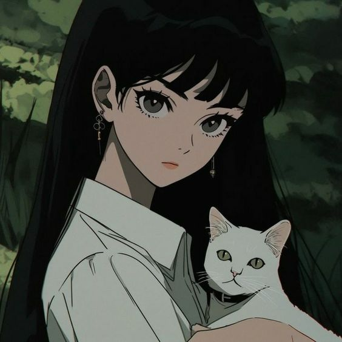

Manusia dan Kucing
Seorang perempuan muda dengan rambut hitam panjang dan mata berbinar dengan penuh kasih sayang, terlihat tersenyum lembut. Dia memakai kemeja lengan panjang berwarna putih yang senada dengan suasana hangat di sekitarnya.Di lengannya, dia memegang dengan lembut seekor kucing berbulu lembut.....